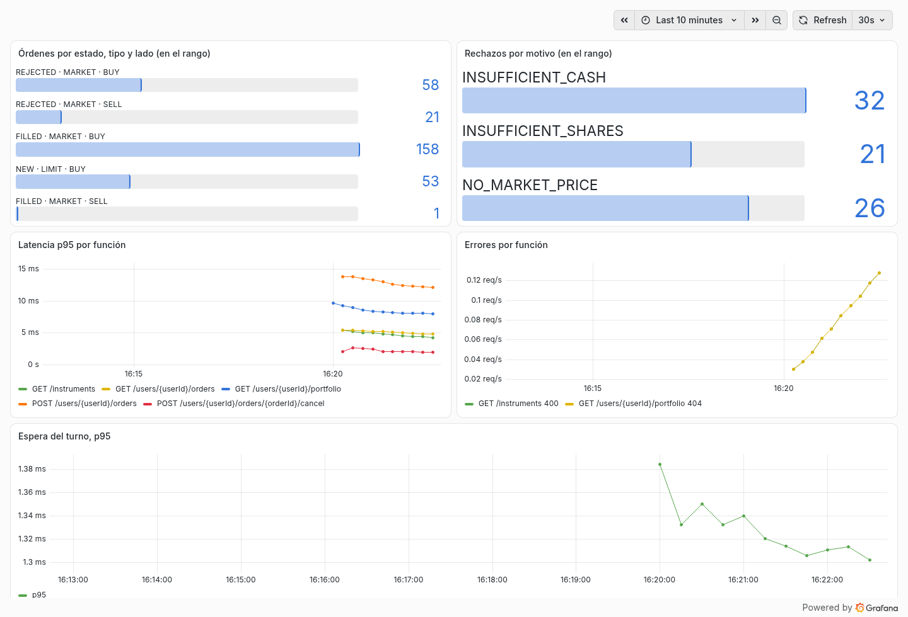

Métricas¶
Qué mide la API, dónde se ve y qué dio al medirla con volumen.
El tablero¶
Con todo levantado está en Grafana, en http://localhost:3000. Es la página de inicio y no pide usuario ni clave.

La captura es de la API corriendo en local, con tráfico de ejemplo: los números cambian en cada corrida.
| Panel | Qué contesta |
|---|---|
| Órdenes por estado, tipo y lado | cuántas órdenes se ejecutan, quedan pendientes o se rechazan |
| Rechazos por motivo | por qué se rechazan: faltan pesos, faltan acciones o el activo no cotiza |
| Latencia p95 por función | cuánto tarda cada función, sin contar /actuator/* |
| Errores por función | qué función devuelve errores, y con qué código |
| Espera del turno, p95 | cuánto espera un envío el turno de su usuario: si crece, hay órdenes del mismo usuario chocando |
Las órdenes y la espera del turno se ven desde el primer pedido. La latencia y los errores de cada función aparecen desde el segundo, con al menos 15 segundos entre los dos: Prometheus necesita dos lecturas para calcularlos.
Qué mide la API¶
En texto, tal como las lee Prometheus, están en http://localhost:8080/actuator/prometheus.
| Métrica | Etiquetas | Para qué |
|---|---|---|
orders_recorded_total |
lado, tipo, estado y motivo del rechazo | cuántas órdenes se ejecutan, quedan pendientes o se rechazan, y por qué (GEN-4) |
orders_cancelled_total |
— | cuántas órdenes se cancelan |
orders_replayed_total |
— | cuántos reintentos devolvieron una orden existente (R-2) |
orders_turn_wait_seconds |
— | cuánto espera un envío el turno del usuario (sección 5.2): si crece, hay órdenes del mismo usuario chocando. También con histograma, para el percentil 95 del tablero |
http_server_requests_seconds |
dirección, método, código y resultado | cuánto tarda y cuántos errores da cada función (GEN-4). Lo mide Spring solo. El histograma, que hace falta para calcular el percentil 95, se prende con management.metrics.distribution.percentiles-histogram.http.server.requests: true |
Por qué estas y cómo se eligió mostrarlas: RFC, sección 8 y ADR 0007.
El tiempo de respuesta¶
El objetivo es un percentil 95 por debajo de 100 ms en las cinco funciones, con 2 millones de órdenes en la tabla y usuarios de hasta 10.000 órdenes (RFC, sección 8.4). Cada escenario manda 10 pedidos por segundo durante un minuto:
| Escenario | Pedidos | p50 (ms) | p95 (ms) | p99 (ms) | Máximo (ms) | p95 de la corrida anterior (ms) |
|---|---|---|---|---|---|---|
search |
600 | 3,06 | 4,53 | 5,45 | 33,33 | 4,59 |
portfolio_typical |
601 | 5,65 | 6,94 | 7,9 | 9 | 6,82 |
portfolio_heavy |
600 | 27,57 | 35,01 | 37,82 | 40,88 | 34,23 |
submit_typical |
601 | 6,38 | 8,32 | 9,8 | 12,46 | 8,42 |
submit_heavy |
601 | 32,14 | 61,15 | 70,28 | 72,54 | 59,91 |
list_typical |
601 | 2,97 | 4,52 | 5,31 | 31,04 | 4,48 |
list_heavy |
601 | 4,18 | 8,31 | 9,15 | 11,12 | 8,21 |
cancel_typical (solo el pedido de cancelar) |
601 | 1,87 | 3,1 | 4,1 | 5,24 | 3,12 |
cancel_heavy (solo el pedido de cancelar) |
601 | 1,49 | 3,09 | 3,69 | 4,47 | 3,2 |
Es una carga moderada, en una computadora de escritorio y con la base en memoria: sirve como orden de magnitud, y no dice cuántos pedidos aguanta la API. La máquina, los datos, los límites y cómo repetirla están en la medición completa.
En producción, con New Relic¶
Se cambia el registro de Micrometer por micrometer-registry-new-relic, con la clave y la cuenta por variables de
entorno. Las métricas y su código no cambian.